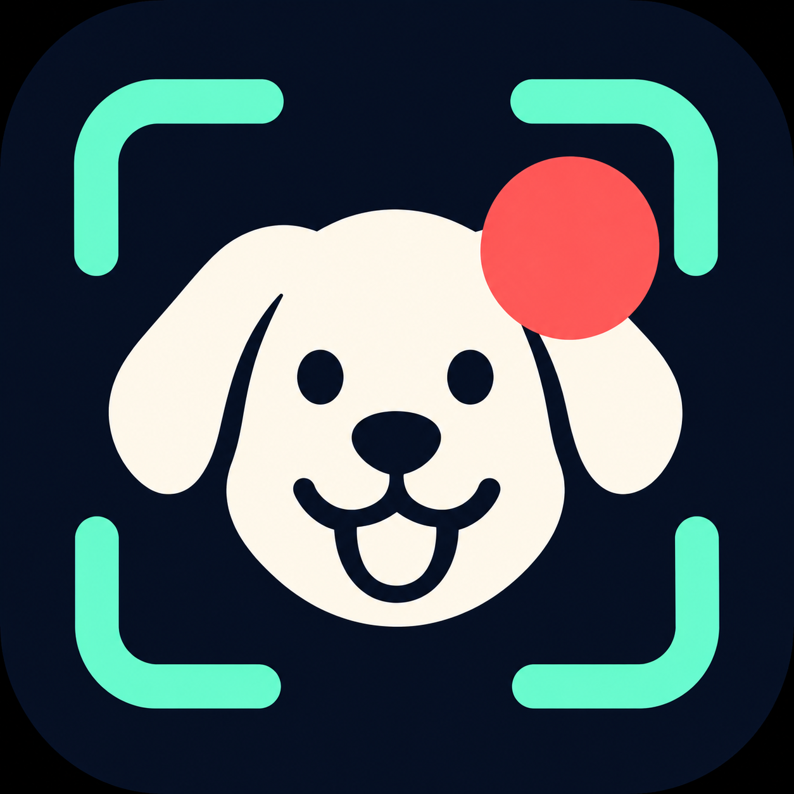

ТЕСТОВАЯ СБОРКА 0.57
Заметнее.
С первого взгляда.
Выбранная иконка: красная точка ×3, сдвиг 25% на верхнюю часть уха собаки.
Android 11+ · ARM64 · Установка поверх прежнего приложения. Прошивку ESP32 менять не нужно.
Изменён только значок

Камера, распознавание, голосовые команды, видео, Bluetooth и настройки обновлений остались прежними. Геометрия главного экрана и кнопки не менялись.
Что проверить
Голос «Ирина». Графический образец значка, не видеозапись физического телефона. Отображение под маской лаунчера зависит от Android.